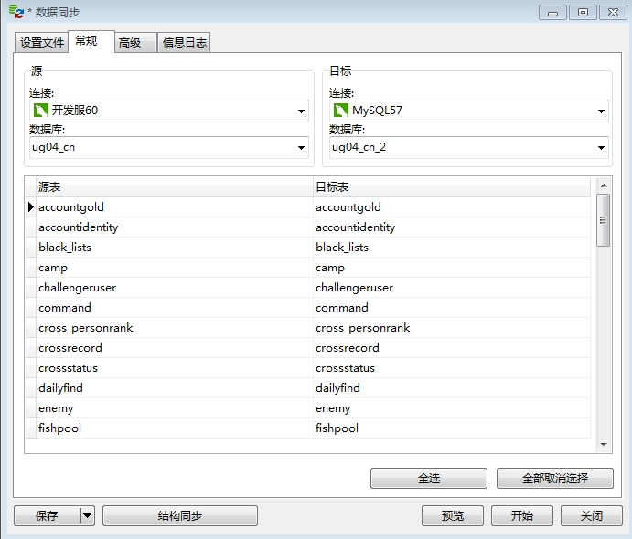

Work CheatSheet
查询进程执行目录
可用于查询外服某一个渠道的服务器进程目录。
ps aux | grep <游戏服名> # 比如ug04_cn
重置系统数据
先下线，等待10分钟(保证缓存数据库移除角色)，然后数据库中执行类似下面的脚本：
UPDATE role_attr_detail2 SET mount_data = '' WHERE role_id = 2097153;
重新上线后即完成重置。
插命令
# 热更，更多类型见：RELOAD_CONFIG_TYPE insert into command (creator, type, cmd) values ("background", 2, "Cmd Reload 6 0 0" ); # 封号 insert into command (creator, type, cmd) values ("background", 1, "Cmd Forbid pname forbid_time" ); # 封号 .e.g insert into command (creator, type, cmd) values ("background", 1, "Forbid dev_liudiwen_2 3600" );
creator不重要，无须关心。type指定通知哪一个进程，见枚举CMD_TYPE，cmd是具体通知程序的命令。
进程处理入口：
-
loginserver: LoginServer::OnCmd
-
gameworld: System::OnCmd
如果需要编写插命令的代码，就需要在这里添加。然后告知运维具体的命令和命令的类型，类型为1表示用于loginserver，为2则代表用于gameworld。
服务端合代码步骤
-
拷贝相关配置表
-
根据配置表找到配置代码，拷贝代码
-
单独编译代码文件，通过后，检查public成员函数的调用位置
-
根据调用位置，合并相关代码，重复上一个步骤
-
SVN检查代码变更，成员变量检查初始化，CS协议检查注册回调函数，public成员函数检查调用数量
-
OK
将消耗物品设置为自动购买
策划配置：
-
打开表格：W-被动消耗类.xls
-
设置物品的字段：get_way，将第一个内容设置为0。
服务端相关接口：Knapsack::ConsumeItemAutoBuy
修改传闻
打开传闻文件：config\serverconfig\string.xml
找到对应的字符串，直接修改其内容即可。
注意：不能调整%的位置，不能删除%，如果需要调整，就得找服务端改对应的代码。
修改错误码
修改错误码需要服务端改代码。
如果错误码提示很奇怪，那么有可能是客户端没有更新新的错误码。
敏感词
如果是名字类的敏感词，由服务端处理。
如果是比较长的，比如聊天的，由客户端处理。
日志报错
SeriousError (Critical): [Knapsack::Init Error]
可能是由于策划在itemmanager.xml中删除了某个item的配置，导致玩家身上的该物品读取配置失败。
拉取开发服数据
打开Navicat，菜单栏选工具 -> 数据同步，选择要同步的数据库：

点击开始同步开发服数据到本地数据库。
然后设置local.xml，将开发服加入合服列表。
<!-- 允许的服ID列表 --> <allow_server_id_list> <server_id>2</server_id> <server_id>1</server_id> </allow_server_id_list>
之后就可以使用开发服的角色登陆本地服了。